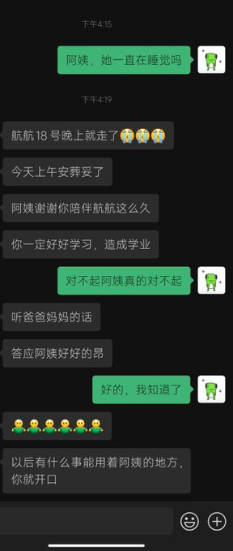
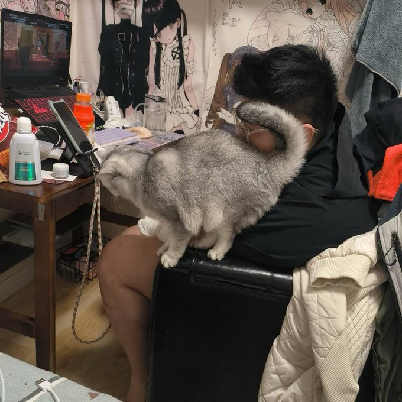
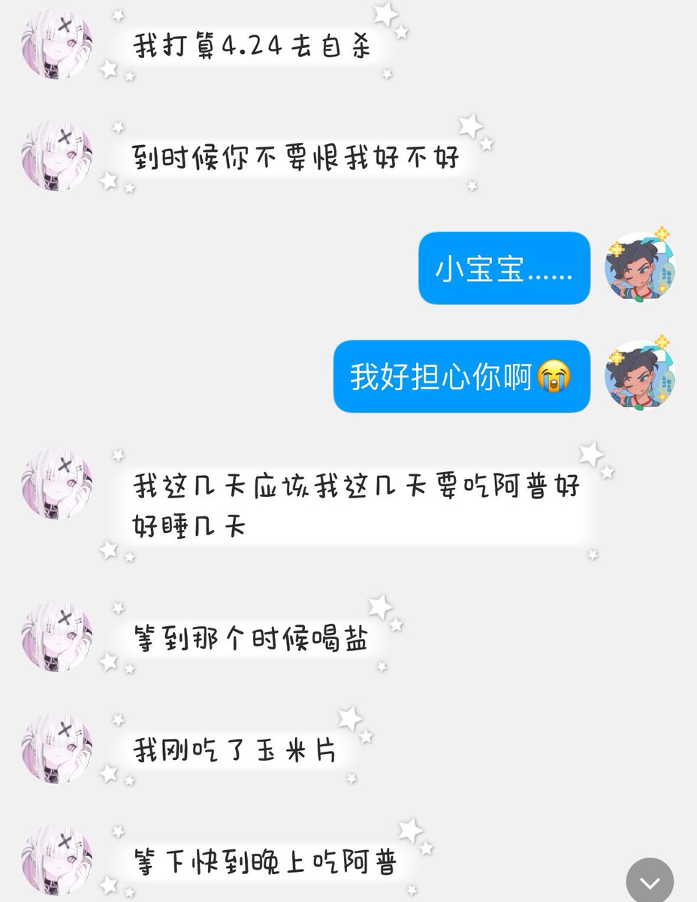

讣告：
我的好闺蜜@shudesu00 @Ki_backlol
小树 真名杜欣颖 在2026年4月18号晚上 因为服用亚硝酸钠 右美 阿普唑仑 离世 生于2001年8月29日 今日下葬 其母告诉的消息 一个友善的ftx小树树 有一只可爱的银渐层小猫叫胆胆 对待朋友们温柔热情 本来要来我的城市和我一起玩 在做生意时也会给我打折 还有诚信 给我寄了很多礼物有一个还在路上 可惜我只能睹物思人了 它在山东和妈妈一起生活 有着双相情感障碍 反社会人格 但是它也选择对朋友们真心 可是在二月左右 她被骗子骗光身上所有的钱 是一个主播 它进了它的粉丝群 因为其精神病人和自残照 被骂疤痕像薯塔 它曾说我是它的家人我要好好活着 我们总是互相寄礼物 我不明白社会为什么让这样一个可怜的它变成这样 我很爱它 如同它名字一样 它在我心里扎根发芽长成大树 它曾来过这个世界 和大家产生了交集 它是想活下去的 可是真的发病时冲动自杀导致的 它骗了我 它说26日再自杀 今天 我才知道 18日时 我永远失去了我的家人 我的闺蜜 我的朋友 我希望它在天堂安详 它一定会在那无痛无苦 它的小猫胆胆再也没有主人了 我哭的无法呼吸 我第一次为我的朋友写讣告 我只知道我们不要忘记它 这辈子我会带着它的回忆活下去 我可爱可怜的孩子 我的好朋友 晚安小树 你曾说我是你重要的人之一 可是 你也是我重要的人 我再也…再也见不到你了 希望你能来我梦里
晚安 晚安 晚安 我的树
2026年4月20日
我的好闺蜜@shudesu00 @Ki_backlol
小树 真名杜欣颖 在2026年4月18号晚上 因为服用亚硝酸钠 右美 阿普唑仑 离世 生于2001年8月29日 今日下葬 其母告诉的消息 一个友善的ftx小树树 有一只可爱的银渐层小猫叫胆胆 对待朋友们温柔热情 本来要来我的城市和我一起玩 在做生意时也会给我打折 还有诚信 给我寄了很多礼物有一个还在路上 可惜我只能睹物思人了 它在山东和妈妈一起生活 有着双相情感障碍 反社会人格 但是它也选择对朋友们真心 可是在二月左右 她被骗子骗光身上所有的钱 是一个主播 它进了它的粉丝群 因为其精神病人和自残照 被骂疤痕像薯塔 它曾说我是它的家人我要好好活着 我们总是互相寄礼物 我不明白社会为什么让这样一个可怜的它变成这样 我很爱它 如同它名字一样 它在我心里扎根发芽长成大树 它曾来过这个世界 和大家产生了交集 它是想活下去的 可是真的发病时冲动自杀导致的 它骗了我 它说26日再自杀 今天 我才知道 18日时 我永远失去了我的家人 我的闺蜜 我的朋友 我希望它在天堂安详 它一定会在那无痛无苦 它的小猫胆胆再也没有主人了 我哭的无法呼吸 我第一次为我的朋友写讣告 我只知道我们不要忘记它 这辈子我会带着它的回忆活下去 我可爱可怜的孩子 我的好朋友 晚安小树 你曾说我是你重要的人之一 可是 你也是我重要的人 我再也…再也见不到你了 希望你能来我梦里
晚安 晚安 晚安 我的树
2026年4月20日


